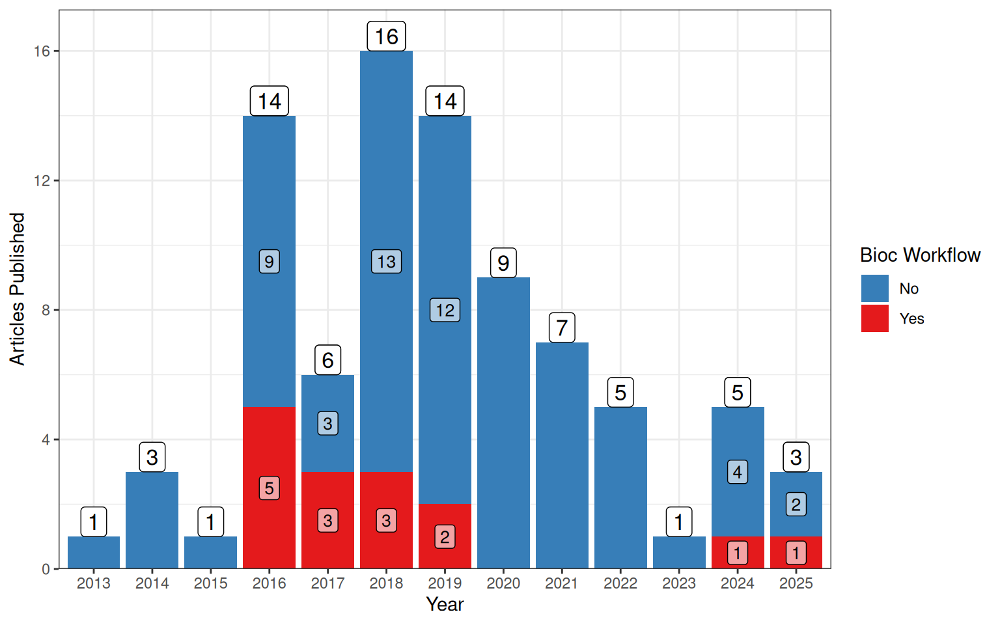
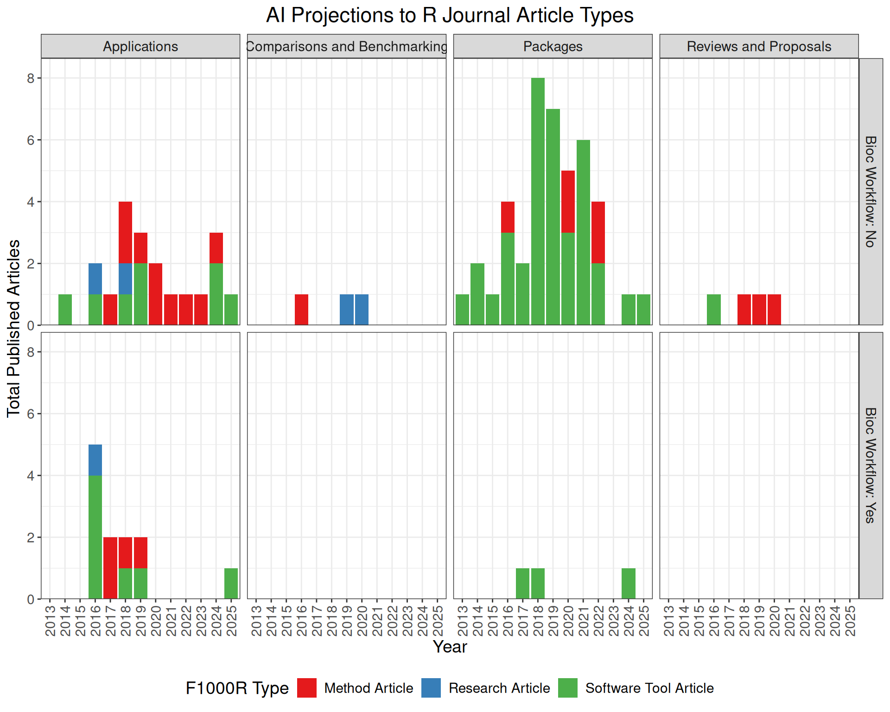

| F1000R Type | n |
|---|---|
| Software Tool Article | 56 |
| Method Article | 23 |
| Research Article | 5 |
| Editorial | 1 |
BiocWorkflows Landscape Analysis
Bioc Workflow Landscape Analysis
This is a brief landscape analysis of publications included in the F1000R Bioconductor Gateway. The publications were summarised using claude.ai taking note of:
- The original article type
- Where it might possibly fit in the R Journal
- Whether a BiocWorkflow exists corresponding to each article
- Whether a Bioconductor package corresponds to each article
In total, 85 articles have been published through the F1000R Bioconductor Gateway, excluding one python package attributed to this gateway. Referring to the Workflows provided on BiocViews, only 28 Bioconductor Worflows have been published on the Bioconductor site. Of these, 15 were also published using the F1000R Gateway.

| F1000R Type | n |
|---|---|
| Method Article | 4 |
| Research Article | 1 |
| Software Tool Article | 10 |
| Total | 15 |
Projection to the R Journal

Detailed Table
85 R-focussed articles from the Bioconductor Gateway on F1000Research, with Claude-suggested R Journal article type and Bioconductor workflow/package availability. Sorted newest to oldest.
F1000R types: Method Article Software Tool Article Research Article Editorial
R Journal suggested: Packages Reviews & Proposals Comparisons & Benchmarking Applications
| # | Article Title | Authors | Year | F1000R Type | Suggested R Journal Type | Bioc Workflow? | Bioc Package? |
|---|
Notes: “Bioc Workflow” = a corresponding workflow package exists on Bioconductor (bioconductor.org/packages/workflows). “Bioc Package” = one or more software packages on Bioconductor are directly associated with the paper. Suggested R Journal types are indicative based on the primary nature of each article. Sources: F1000Research Bioconductor Gateway (all 5 pages, 86 articles); Bioconductor workflow package index.